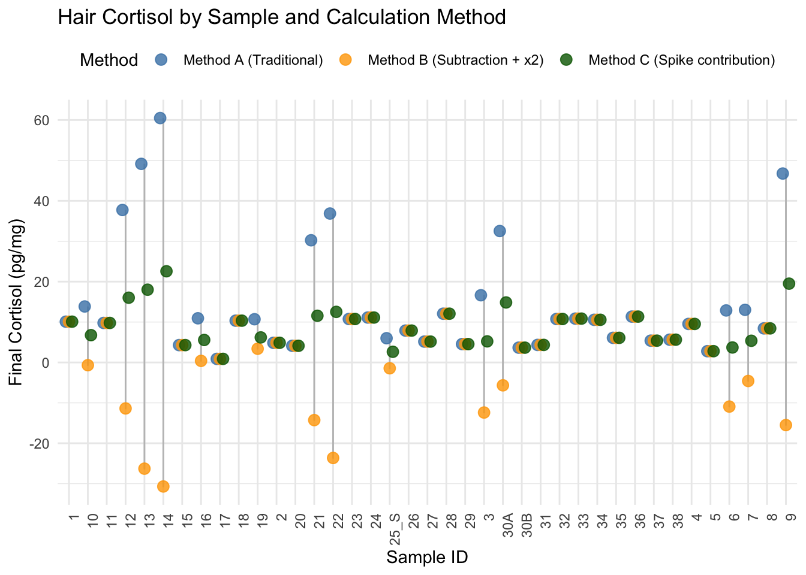
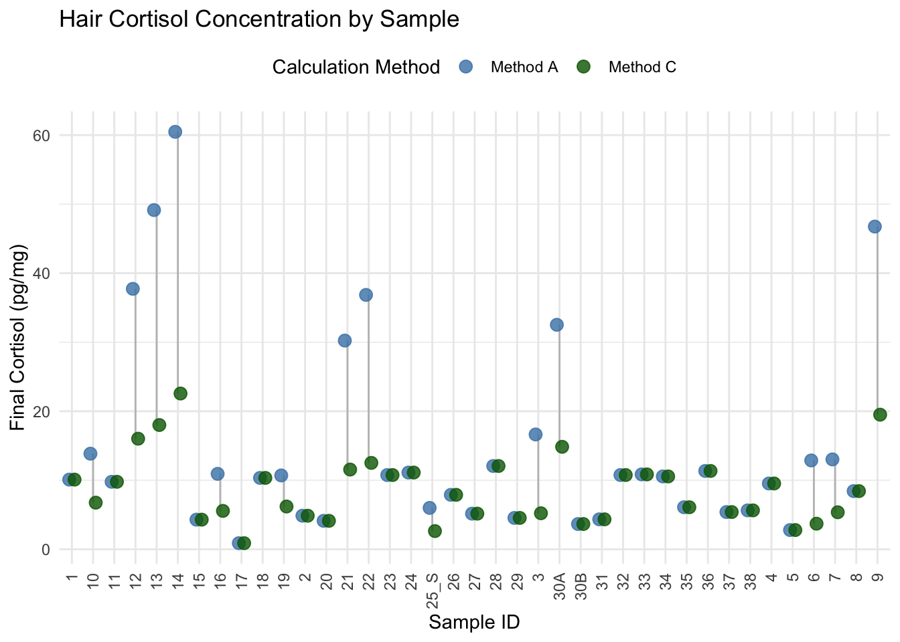
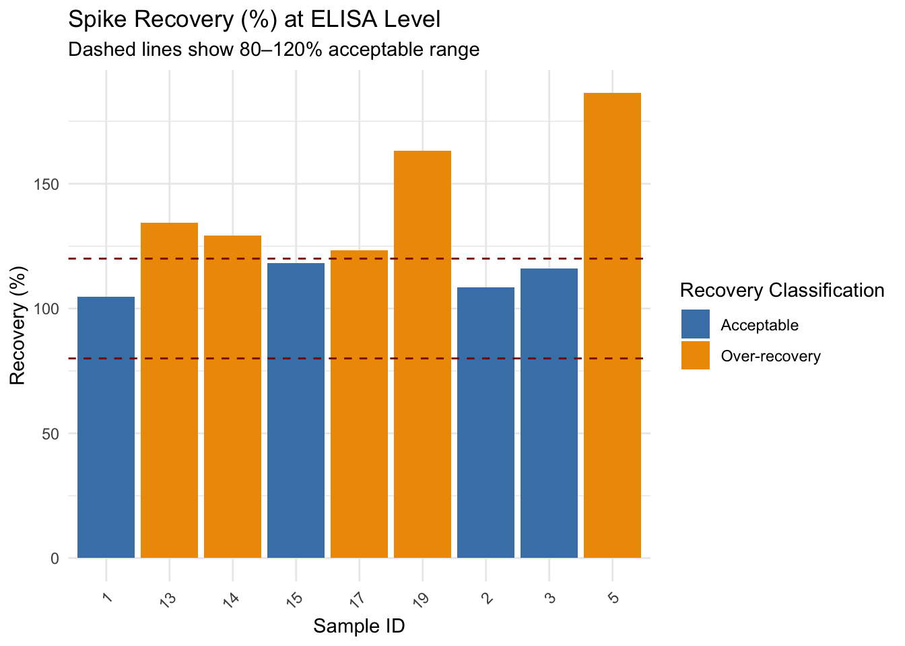

Final vals analysis, test3
2025-04-08
Last updated: 2025-04-28
Checks: 6 1
Knit directory:
HairCort-Evaluation-Nist2020/
This reproducible R Markdown analysis was created with workflowr (version 1.7.1). The Checks tab describes the reproducibility checks that were applied when the results were created. The Past versions tab lists the development history.
The R Markdown is untracked by Git. To know which version of the R
Markdown file created these results, you’ll want to first commit it to
the Git repo. If you’re still working on the analysis, you can ignore
this warning. When you’re finished, you can run
wflow_publish to commit the R Markdown file and build the
HTML.
Great job! The global environment was empty. Objects defined in the global environment can affect the analysis in your R Markdown file in unknown ways. For reproduciblity it’s best to always run the code in an empty environment.
The command set.seed(20241016) was run prior to running
the code in the R Markdown file. Setting a seed ensures that any results
that rely on randomness, e.g. subsampling or permutations, are
reproducible.
Great job! Recording the operating system, R version, and package versions is critical for reproducibility.
Nice! There were no cached chunks for this analysis, so you can be confident that you successfully produced the results during this run.
Great job! Using relative paths to the files within your workflowr project makes it easier to run your code on other machines.
Great! You are using Git for version control. Tracking code development and connecting the code version to the results is critical for reproducibility.
The results in this page were generated with repository version cb56a96. See the Past versions tab to see a history of the changes made to the R Markdown and HTML files.
Note that you need to be careful to ensure that all relevant files for
the analysis have been committed to Git prior to generating the results
(you can use wflow_publish or
wflow_git_commit). workflowr only checks the R Markdown
file, but you know if there are other scripts or data files that it
depends on. Below is the status of the Git repository when the results
were generated:
Ignored files:
Ignored: .DS_Store
Ignored: .RData
Ignored: .Rhistory
Ignored: analysis/.DS_Store
Ignored: analysis/.Rhistory
Ignored: data/.DS_Store
Ignored: data/Test3/.DS_Store
Ignored: data/Test4/.DS_Store
Untracked files:
Untracked: analysis/ELISA_Analysis_FinalVals_test3.Rmd
Untracked: data/Test3/Data_Cortisol_Processed.csv
Untracked: data/Test3/Data_cort_values_ABC.csv
Untracked: data/Test3/precision_accuracy_summary.csv
Unstaged changes:
Deleted: analysis/ELISA_Analysis_FinalVals_comparisons_test3_test4.Rmd
Modified: analysis/ELISA_Analysis_FinalVals_test4.Rmd
Modified: analysis/ELISA_Analysis_RawVals_test3.Rmd
Modified: analysis/ELISA_Analysis_RawVals_test4.Rmd
Modified: analysis/ELISA_Calc_FinalVals_test3.Rmd
Modified: analysis/ELISA_Calc_FinalVals_test4.Rmd
Note that any generated files, e.g. HTML, png, CSS, etc., are not included in this status report because it is ok for generated content to have uncommitted changes.
There are no past versions. Publish this analysis with
wflow_publish() to start tracking its development.
Test3
Plate description
Combined variables to evaluate effect of weight, dilution, and addition of spike
#path:
data_path = "./data/Test3"
# Load the dataset
data3 <- read.csv(file.path(data_path,"Data_QC_flagged.csv"))
data <- data3
data$Failed_samples[is.na(data$Failed_samples)] <- "OK"
# Conversion and Constants
data$Buffer_ml <- data$Buffer_nl / 1000
data$TotalVol_well_ml <- data$TotalVol_well_ul / 1000
data$SpikeVol_ml <- data$SpikeVol_ul / 1000
data$Ave_Conc_ug.dl <- data$Ave_Conc_pg.ml / 10000
# Extraction ratio
extraction <- 1 / 0.75
# Spike concentration (pg/mL)
std_conc <- 3139.5
# Method A: No spike correction
data$Final_pg.mg_A <- ((data$Ave_Conc_pg.ml / data$Weight_mg) *
extraction * data$Buffer_ml * data$Dilution)
# Method B: Subtract spike reading (std) and apply dilution factor (×2)
data$Final_pg.mg_B <- ifelse(
data$Spike == 1,
((data$Ave_Conc_pg.ml - std_conc) / data$Weight_mg) *
extraction * data$Buffer_ml * 2,
# fallback to method A if not spiked
data$Final_pg.mg_A
)
# Method C: Spike contribution subtracted
data$Spike_contribution <- ((data$SpikeVol_ml * std_conc) / data$TotalVol_well_ml) / data$Dilution
summary(data$Spike_contribution) Min. 1st Qu. Median Mean 3rd Qu. Max.
0.0 0.0 0.0 563.5 1569.8 1569.8 data$Final_pg.mg_C <- (
(data$Ave_Conc_pg.ml - data$Spike_contribution) / data$Weight_mg) *
extraction * data$Buffer_ml * data$Dilution
# Save result
write.csv(data, file.path(data_path,"Data_cort_values_ABC.csv"), row.names = FALSE)
# View summary
summary(data$Final_pg.mg_A) Min. 1st Qu. Median Mean 3rd Qu. Max.
0.8836 5.5134 10.5540 14.4346 12.9448 60.4831 summary(data$Final_pg.mg_B) Min. 1st Qu. Median Mean 3rd Qu. Max.
-30.7005 -3.0170 4.3358 0.8079 9.6526 12.0647 summary(data$Final_pg.mg_C) Min. 1st Qu. Median Mean 3rd Qu. Max.
0.8836 5.0099 7.8851 8.6067 10.9813 22.5664 data3 <- data# Reshape data for plotting
data_long <- data %>%
pivot_longer(
cols = c(Final_pg.mg_A, Final_pg.mg_B, Final_pg.mg_C),
names_to = "Method",
values_to = "Final_pg.mg"
)
ggplot(data_long, aes(x = Sample, y = Final_pg.mg, color = Method, group = Method)) +
geom_line(aes(group = Sample), color = "gray75", size = 0.5) +
geom_point(size = 3, alpha = 0.8, position = position_dodge(width = 0.5)) +
scale_color_manual(
values = c("Final_pg.mg_A" = "steelblue",
"Final_pg.mg_B" = "orange",
"Final_pg.mg_C" = "darkgreen"),
labels = c("Method A (Traditional)",
"Method B (Subtraction + x2)",
"Method C (Spike contribution)")
) +
labs(
title = "Hair Cortisol by Sample and Calculation Method",
x = "Sample ID",
y = "Final Cortisol (pg/mg)",
color = "Method"
) +
theme_minimal() +
theme(
axis.text.x = element_text(angle = 90, hjust = 1),
legend.position = "top"
)
# Reshape to long format
data_long <- data %>%
pivot_longer(
cols = c(Final_pg.mg_A, Final_pg.mg_C),
names_to = "Method",
values_to = "Final_pg.mg"
)
# Plot
# Plot with lines connecting A and D values for each sample
ggplot(data_long, aes(x = Sample, y = Final_pg.mg, color = Method)) +
geom_line(aes(group = Sample), color = "gray75", size = 0.5) + # light line connecting methods
geom_point(size = 3, alpha = 0.8, position = position_dodge(width = 0.5)) +
scale_color_manual(
values = c("Final_pg.mg_A" = "steelblue",
"Final_pg.mg_C" = "darkgreen"),
labels = c("Method A", "Method C")
) +
labs(
title = "Hair Cortisol Concentration by Sample",
x = "Sample ID",
y = "Final Cortisol (pg/mg)",
color = "Calculation Method"
) +
theme_minimal() +
theme(
axis.text.x = element_text(angle = 90, vjust = 0.5, hjust = 1),
legend.position = "top"
)
# Filter to include only good quality samples
data_ok <- data %>%
filter(Failed_samples == "OK")
# Reshape data for plotting
data_long_ok <- data_ok %>%
pivot_longer(
cols = c(Final_pg.mg_A, Final_pg.mg_C),
names_to = "Method",
values_to = "Final_pg.mg"
)
print(data_long_ok, n=5)# A tibble: 60 × 28
Sample Wells Raw.OD Binding.Perc Conc_pg.ml Ave_Conc_pg.ml CV.Perc SD SEM
<chr> <chr> <dbl> <dbl> <dbl> <dbl> <dbl> <dbl> <dbl>
1 11 E5 0.939 71.6 497. 513. 4.5 23.1 16.3
2 11 E5 0.939 71.6 497. 513. 4.5 23.1 16.3
3 12 F5 0.422 30 2690 2728 1.92 52.5 37.1
4 12 F5 0.422 30 2690 2728 1.92 52.5 37.1
5 13 G5 0.451 32.1 2412 2477 3.68 91.1 64.4
# ℹ 55 more rows
# ℹ 19 more variables: Category <chr>, Weight_mg <dbl>, Buffer_nl <int>,
# Spike <int>, TotalVol_well_ul <int>, SpikeVol_ul <int>, Dilution <int>,
# Sample_comparable <int>, CV_categ <chr>, Binding.Perc_categ <chr>,
# Failed_samples <chr>, Buffer_ml <dbl>, TotalVol_well_ml <dbl>,
# SpikeVol_ml <dbl>, Ave_Conc_ug.dl <dbl>, Final_pg.mg_B <dbl>,
# Spike_contribution <dbl>, Method <chr>, Final_pg.mg <dbl># Plot for OK samples only
ggplot(data_long_ok, aes(x = Sample, y = Final_pg.mg, color = Method)) +
geom_line(aes(group = Sample), color = "gray75", size = 0.5) +
geom_point(size = 3, alpha = 0.8, position = position_dodge(width = 0.5)) +
scale_color_manual(
values = c("Final_pg.mg_A" = "steelblue",
# "Final_pg.mg_B" = "orange",
"Final_pg.mg_C" = "darkgreen"),
labels = c("Method A (Traditional)",
# "Method B (Subtraction + x2)",
"Method C (Spike contribution)")
) +
labs(
title = "Hair Cortisol (Good Samples Only) — Test3",
x = "Sample ID",
y = "Final Cortisol (pg/mg)",
color = "Method"
) +
theme_minimal() +
theme(
axis.text.x = element_text(angle = 90, hjust = 1),
legend.position = "top"
)
Recovery test 3
library(dplyr)
# Load the datax
df <- read.csv(file.path(data_path, "Data_Cortisol_Processed.csv"))
data3_processed <- df
# Clean: extract numeric SampleID suffix to help match pairs
df <- df %>%
mutate(SampleID = str_extract(Sample_comparable, "\\d+$"))
# Step 1: Wide format - match NoSpike and YesSpike using SampleID
df_wide <- df %>%
filter(Category %in% c("NoSpike", "YesSpike")) %>%
dplyr::select(SampleID, Category, Ave_Conc_pg.ml)
# Step 3: Identify IDs that have BOTH NoSpike and YesSpike
df_avg <- df_wide %>%
dplyr::group_by(SampleID, Category) %>%
dplyr::summarise(Ave_pgml = mean(Ave_Conc_pg.ml, na.rm = TRUE), .groups = "drop")
# Step 3: Identify IDs that have BOTH NoSpike and YesSpike
paired_ids <- df_avg %>%
dplyr::count(SampleID) %>%
filter(n == 2) %>%
pull(SampleID)
df_paired <- df_avg %>%
filter(SampleID %in% paired_ids)
df_recovery <- df_paired %>%
pivot_wider(names_from = Category, values_from = Ave_pgml)
# Step : Define known spike contribution (pg/mL)
# Assume 25 µL of 3200 pg/mL added into 50 µL total = (25/1000 * 3200) / (50/1000)
known_spike_pgml <- 1569.75 # = 1600 pg/mL
df_recovery <- df_recovery %>%
mutate(Recovery_pct = ((YesSpike - NoSpike) / known_spike_pgml) * 100)
df_recovery <- df_recovery %>%
mutate(Recovery_Class = case_when(
Recovery_pct < 80 ~ "Under-recovery",
Recovery_pct > 120 ~ "Over-recovery",
TRUE ~ "Acceptable"))
# Step 5: Plot
ggplot(df_recovery, aes(x = SampleID, y = Recovery_pct, fill = Recovery_Class)) +
geom_bar(stat = "identity") +
geom_hline(yintercept = c(80, 120), linetype = "dashed", color = "darkred") +
scale_fill_manual(values = c(
"Under-recovery" = "red",
"Acceptable" = "steelblue",
"Over-recovery" = "orange2"
)) +
labs(
title = "Spike Recovery (%) at ELISA Level",
subtitle = "Dashed lines show 80–120% acceptable range",
x = "Sample ID",
y = "Recovery (%)",
fill = "Recovery Classification"
) +
theme_minimal() +
theme(axis.text.x = element_text(angle = 45, hjust = 1))
# Step 4: View or export summary table
print(df_recovery)# A tibble: 9 × 5
SampleID NoSpike YesSpike Recovery_pct Recovery_Class
<chr> <dbl> <dbl> <dbl> <chr>
1 1 644. 2287 105. Acceptable
2 13 397. 2504 134. Over-recovery
3 14 450 2477 129. Over-recovery
4 15 680. 2535 118. Acceptable
5 17 794. 2728 123. Over-recovery
6 19 325. 2888 163. Over-recovery
7 2 501. 2204 108. Acceptable
8 3 1045 2866. 116. Acceptable
9 5 271. 3196 186. Over-recovery All samples show recovery ≥ 105%, with most between 105% and 132%
Sample 5, 8, 9, and 11–12 exceed the standard acceptable range of 80–120%
This suggests slightly inflated recovery, potentially due to:
Minor pipetting differences
Matrix effects (e.g., enhanced absorbance in spiked matrix)
Slight overestimation in YesSpike values relative to expected spike contribution
Spike recovery ranged from 105% to 155% across 10 matched sample pairs. Most samples fell near or slightly above the commonly accepted 80–120% range, with the highest recovery observed in Sample 5 (155%). These results indicate that the ELISA assay successfully detects added cortisol with high sensitivity, though minor over-recovery may reflect matrix effects or variation in sample absorbance. Overall, recovery was consistent and supports the validity of the spike-in approach at the ELISA level.
Precision and accuracy, test3
df <- data3_processed
# Step 1: Clean and filter only relevant categories
df_sub <- df %>%
filter(Category %in% c("NoSpike", "YesSpike")) %>%
mutate(Sample_comparable = as.character(Sample_comparable))
# Step 2: Keep only Sample_comparable IDs with both YesSpike and NoSpike
valid_pairs <- df_sub %>%
distinct(Sample_comparable, Category) %>%
dplyr::count(Sample_comparable) %>%
filter(n == 2) %>%
pull(Sample_comparable)
df_matched <- df_sub %>%
filter(Sample_comparable %in% valid_pairs)
# Step 3: Pivot to wide format for recovery calculation
df_wide <- df_matched %>%
dplyr::select(Sample_comparable, Category, Ave_Conc_pg.ml)
df_avg <- df_wide %>%
dplyr::group_by(Sample_comparable, Category) %>%
dplyr::summarise(Ave_pgml = mean(Ave_Conc_pg.ml, na.rm = TRUE), .groups = "drop")
Spike_contribution <- 1569.75
df_recovery <- df_avg %>%
pivot_wider(names_from = Category, values_from = Ave_pgml)
# Step 4: Calculate Recovery % and accuracy flag
df_wide <- df_recovery %>%
mutate(
Recovery_pct = ((YesSpike - NoSpike) / Spike_contribution) * 100,
Accuracy_Flag = case_when(
is.na(Recovery_pct) ~ NA_character_,
Recovery_pct < 80 ~ "Under-recovery",
Recovery_pct > 120 ~ "Over-recovery",
TRUE ~ "Acceptable"
)
)
# Step 5: Extract precision values
df_precision <- df %>%
dplyr::select(Sample, Sample_comparable, CV.Perc, Weight_mg, Buffer_ml) %>%
mutate(Precision_Flag = case_when(
is.na(CV.Perc) ~ NA_character_,
CV.Perc <= 15 ~ "Acceptable",
TRUE ~ "High CV"
))
df_precision$Sample_comparable<- as.character(df_precision$Sample_comparable)
# Step 6: Merge precision with accuracy summary
df_summary <- left_join(df_wide, df_precision, by = "Sample_comparable") %>%
distinct(Sample_comparable, .keep_all = TRUE) %>%
dplyr::select(Sample, Weight_mg, Buffer_ml, CV.Perc, Precision_Flag, Recovery_pct, Accuracy_Flag)
df_sorted <- df_summary %>% arrange(Weight_mg, Buffer_ml)
df_sorted$Sample <- 1:nrow(df_sorted)
# Step 7: View or export
print(df_sorted)# A tibble: 9 × 7
Sample Weight_mg Buffer_ml CV.Perc Precision_Flag Recovery_pct Accuracy_Flag
<int> <dbl> <dbl> <dbl> <chr> <dbl> <chr>
1 1 12 0.06 11.1 Acceptable 105. Acceptable
2 2 13.1 0.25 23.3 High CV 134. Over-recovery
3 3 14.4 0.06 3.79 Acceptable 108. Acceptable
4 4 17.5 0.25 4.5 Acceptable 129. Over-recovery
5 5 17.7 0.06 98 High CV 116. Acceptable
6 6 21.5 0.25 1.03 Acceptable 118. Acceptable
7 7 23.4 0.06 4.47 Acceptable 186. Over-recovery
8 8 24.1 0.25 1.92 Acceptable 123. Over-recovery
9 9 29.6 0.25 0.565 Acceptable 163. Over-recovery# Optional: Save to file
write.csv(df_sorted, file.path(data_path, "precision_accuracy_summary.csv"), row.names = FALSE)
ggplot(df_sorted, aes(x = Weight_mg, y = Recovery_pct,
color = Accuracy_Flag, shape = Precision_Flag)) +
geom_point(size = 4) +
geom_hline(yintercept = c(80, 120), linetype = "dashed", color = "darkgray") +
labs(
title = "Spike Recovery (%) vs Hair Weight (mg)",
subtitle = "Dashed lines show 80–120% acceptable range",
x = "Hair Weight (mg)",
y = "Recovery (%)",
color = "Accuracy",
shape = "Precision"
) +
theme_minimal() 
sessionInfo()R version 4.5.0 (2025-04-11)
Platform: aarch64-apple-darwin20
Running under: macOS Sequoia 15.4.1
Matrix products: default
BLAS: /Library/Frameworks/R.framework/Versions/4.5-arm64/Resources/lib/libRblas.0.dylib
LAPACK: /Library/Frameworks/R.framework/Versions/4.5-arm64/Resources/lib/libRlapack.dylib; LAPACK version 3.12.1
locale:
[1] en_US.UTF-8/en_US.UTF-8/en_US.UTF-8/C/en_US.UTF-8/en_US.UTF-8
time zone: America/Detroit
tzcode source: internal
attached base packages:
[1] stats graphics grDevices utils datasets methods base
other attached packages:
[1] lubridate_1.9.4 forcats_1.0.0 stringr_1.5.1 purrr_1.0.4
[5] readr_2.1.5 tidyr_1.3.1 tibble_3.2.1 tidyverse_2.0.0
[9] dplyr_1.1.4 paletteer_1.6.0 broom_1.0.8 ggplot2_3.5.2
[13] knitr_1.50
loaded via a namespace (and not attached):
[1] utf8_1.2.4 sass_0.4.10 generics_0.1.3 stringi_1.8.7
[5] hms_1.1.3 digest_0.6.37 magrittr_2.0.3 timechange_0.3.0
[9] evaluate_1.0.3 grid_4.5.0 fastmap_1.2.0 rprojroot_2.0.4
[13] workflowr_1.7.1 jsonlite_2.0.0 backports_1.5.0 rematch2_2.1.2
[17] promises_1.3.2 scales_1.3.0 jquerylib_0.1.4 cli_3.6.4
[21] rlang_1.1.6 munsell_0.5.1 withr_3.0.2 cachem_1.1.0
[25] yaml_2.3.10 tools_4.5.0 tzdb_0.5.0 colorspace_2.1-1
[29] httpuv_1.6.16 vctrs_0.6.5 R6_2.6.1 lifecycle_1.0.4
[33] git2r_0.36.2 fs_1.6.6 pkgconfig_2.0.3 pillar_1.10.2
[37] bslib_0.9.0 later_1.4.2 gtable_0.3.6 glue_1.8.0
[41] Rcpp_1.0.14 xfun_0.52 tidyselect_1.2.1 rstudioapi_0.17.1
[45] farver_2.1.2 htmltools_0.5.8.1 labeling_0.4.3 rmarkdown_2.29
[49] compiler_4.5.0